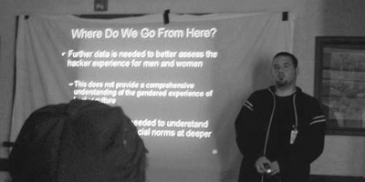

|
A lot of folks are sending us emails and asking us "When will the videos be online?". We don't have an exact time frame for posting the presentations and videos from the conference but we are working on it. We will get them online as soon as we can.
If you spoke at CarolinaCon Six and have not provided us with your slides yet then please provide them as soon as you can.
Also, if you are posting your own photos, videos, or blog posts then please tag them with "CarolinaCon" and/or "CarolinaCon6" so that others can find them. We want you to share your experiences and tell others about the conference. |
|
Thank you to all of those who attended CarolinaCon! We really appreciate you coming out and participating in the event. We hope you had a good time.
We especially want to thank the Speakers who came to the conference and made it into the entertaining and enlightening event that it was. Thank you! You are all truly awesome!
We would also like to thank the All Volunteer Staff that makes this event possible year after year. You guys are the best and thank you so much for helping put together this spectacular event.
Lastly, if you use any of the major picture sharing sites then please tag your photos with "CarolinaCon" or "CarolinaCon6" so that we can find your pictures and share them with future attendees, speakers, and other folks. We don't pay to advertise CarolinaCon so we depend on word of mouth to spread the word about the conference and sharing your pictures and your experiences help us to do that.
Again, a big THANK YOU to all of those that participated and made CarolinaCon such a fun event. |
|
Amateur Radio at CarolinaCon |
|
One quick word for all who may be attending CarolinaCon with ham radio or scanner in tow...
Ham radio talk-in on 2m for con attendees will be on 146.550 Simplex with NO PL tone. Special event callsign N6C has been assigned for the event.
Please respect all FCC Part 97 provisions and maintain control over your station as per §97.5(a).
|
|
The schedule for the talks has finally been posted to the Schedule Page. Sorry it took us so long but we had to work out a couple of last minute details. The CarolinaCon staff are all running at full steam now and working around the clock to figure out the last minute details. We hope to see you at the Conference! |
|
Talk Abstracts Posted and Unofficial Shootout Event |
|
The talk abstracts have been posted under the "schedule" section of the site. We still don't have a finalized schedule but we will have one fairly soon.
In other news, a new member of the NC2600 Forums, chill, has taken it upon himself to organize an unofficial CarolinaCon shootout event. He gave us these details to post:
The shoot is going to be held Friday, March 19th at Noon. If you would like to come shooting, you must RSVP with me. We will initially meet at the hotel in the parking lot before heading out. The shoot is going to be taking place on private property, so there are no limitations on firearms or fire rates. I don't care if you bring a flamethrower, it's all good. If you have never shot a gun before and want to come try it out, you are more than welcome, but you must adhere to 3 rules:
1. Listen to us. We like shooting, but we like being safe and alive even more.
2. Have consideration. Ammunition costs money. Beer and other miscellaneous things will be accepted as donations if you turn out to be trigger happy terry.
3. BRING EAR PROTECTION! WHAT? I SAID BRING EAR PROTECTION! (ie. earplugs, although we may have enough for everyone)
To RSVP: please email
This e-mail address is being protected from spambots. You need JavaScript enabled to view it
We are not officially sponsoring the shootout event but we think it's a cool idea and we hope that those interested will have fun. Please contact chill for more information and not the CarolinaCon staff.
|
|
CarolinaCon Details and Speaker List |
|
We haven't had all of the con information in one spot yet so we're going to change that and post it all in one location:
When: CarolinaCon will be March 19th (7pm-10pm), 20th (10am-10pm), and 21st (10am-4pm)
Where: Holiday Inn at 4100 Glenwood Avenue; Raleigh, NC 27612
Cost: $20.00 for admission, the $20.00 covers all three days
The current list of speakers and talks is as follows:
- We Don't Need No Stinking Badges - Shawn Merdinger
- Locks: Past, Picking, and Future - squ33k
- Cybercrime and the Law Enforcement Response - Thomas Holt, Professor Farnsworth
- You Spent All
That Money and You Still Got Owned - Joe McCray
- Something Smells Phishy: The Evolution of Social Engineering - Chris Silvers and Dawn Perry
- It's Not A Vulnerability, It's A Feature - Deral Heiland
- The Search for the Ultimate Handcuff Key - TOOOL
- The Art of Software Destruction - Joshua Morin and Terron Williams
- How the Droid Was Rooted - Michael Goffin
- Smart People, Stupid Emails - Margaret McDonald
- Mitigating Attacks with Existing Network Infrastructure - Omar Santos
- OMG, The World Has Come To An End!!! - FeloniousFish
- Physical Manifestation of Software: Microcontrollers 101 - Nick Fury
- Protecting Systems through Log Management and System Integrity - David Burt
- Why Linux is Bad for Business - wxs
- Hacking with the iPhone - snide
- Metasploit - Ryan Linn
 |
|
|
|
|
Page 1 of 2 |